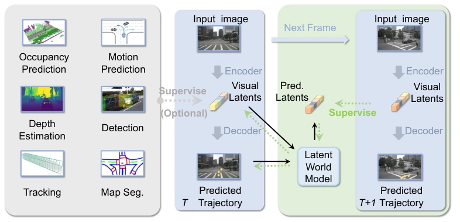
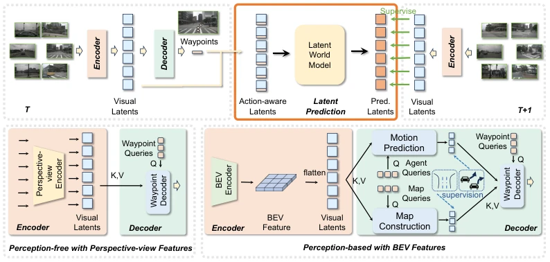
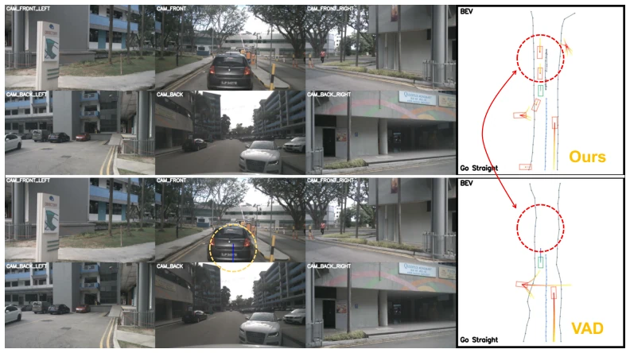
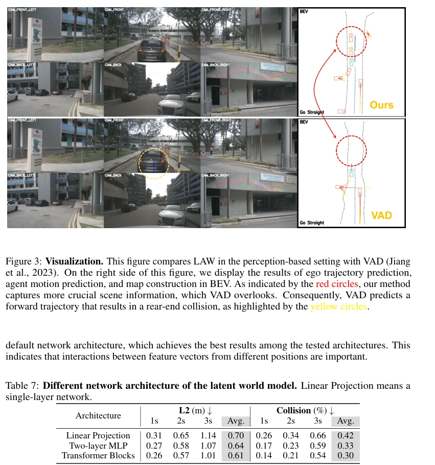
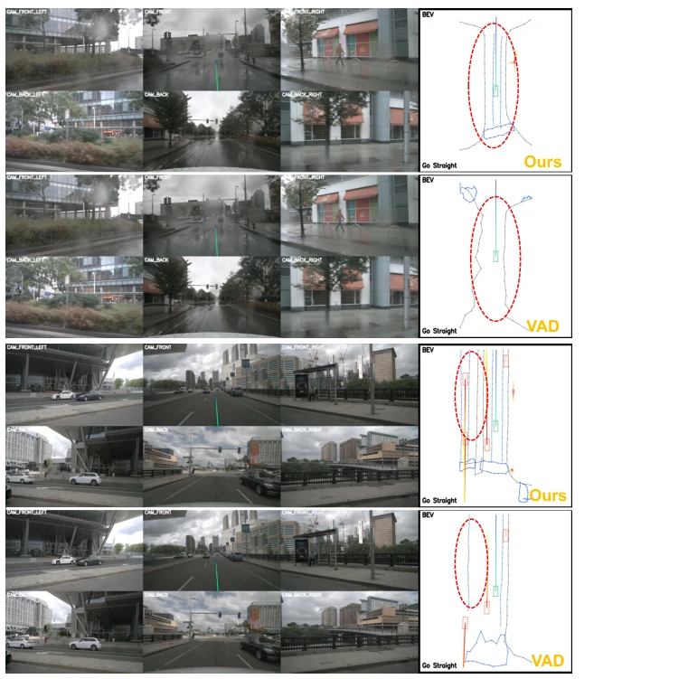
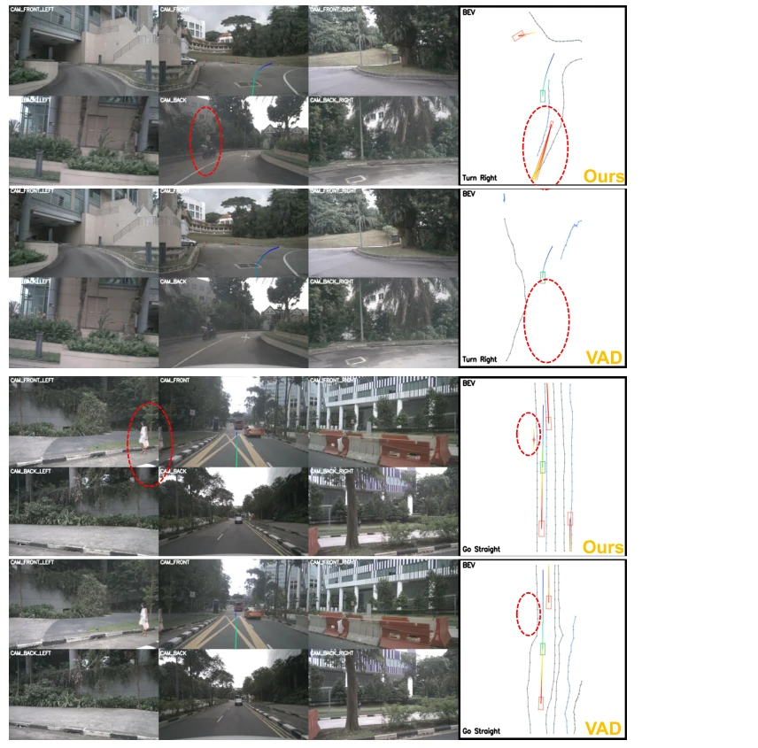
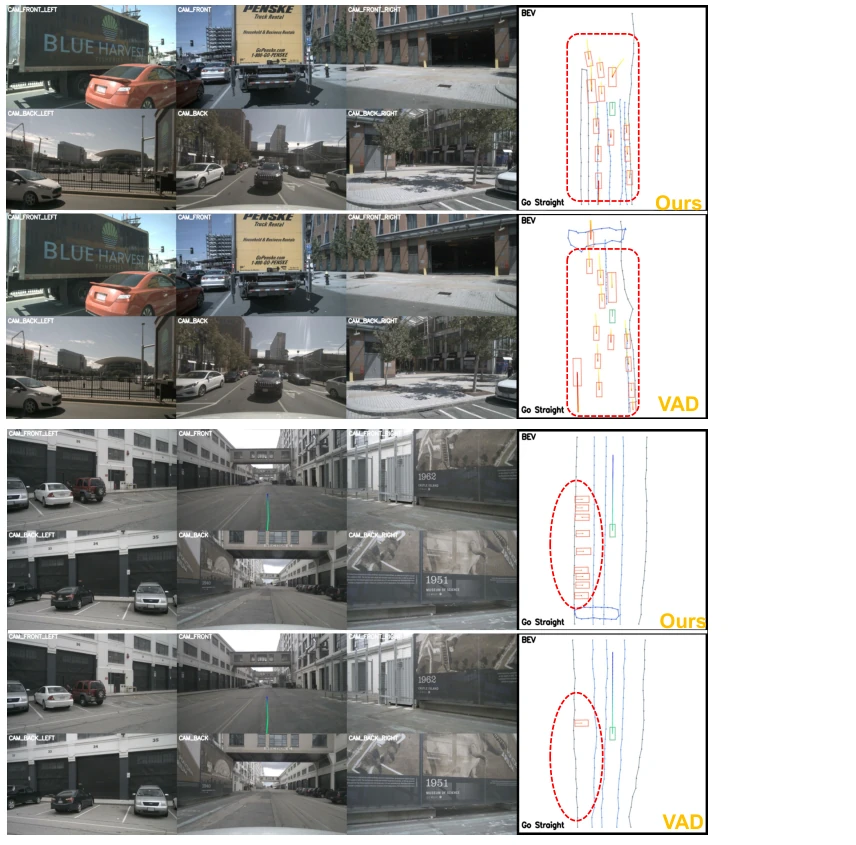

This paper incorporates a 'world model' ingredient into end-to-end autonomous driving, claiming to enhance feature representation. The core involves predicting visual latents of future frames as self-supervised signals, essentially amounting to 'spatiotemporal distillation.' Although the authors boast about achieving top rankings on nuScenes, NAVSIM, and CARLA, a close inspection of the ablation studies indicates that a 1.5-second time window yields optimal results; too short lacks information, while too long leads to inaccurate predictions, reflecting a somewhat 'middle-of-the-road' strategy. Moreover, relying on real features from future frames for supervision essentially still depends on data, falling short of being truly 'unsupervised.' However, its generalizability across both perception-agnostic and perception-aware frameworks is commendable. Yet, the increased model complexity leaves it unclear whether inference speed is affected, which is somewhat regrettable; it feels like adding a 'prophet' add-on to the model, but even a prophet depends on the accuracy of the weather forecast.
研究动机Motivation
端到端规划器直接用原始传感器数据，信息损失少，但怎么学好场景特征是个问题。现有的自监督学习在 NLP 和 CV 很火，但自动驾驶是视频流，静态图像方法不行。以前的未来预测任务忽略了自车动作（ego actions）的影响，而自车动作对塑造未来至关重要。现有的世界模型（如 Drive-WM）基于扩散模型，生成图像太慢（几秒），效率低 (Hu et al., 2023b)。OccWorld 需要占用标注 (Zheng et al., 2023)。所以作者想搞个不需要标注、考虑自车动作、且高效的隐变量世界模型，解决传统方法对感知标注依赖重且计算慢的问题，试图在特征学习和轨迹预测之间找到平衡点。
End-to-end planners utilize raw sensor data directly, minimizing information loss, yet learning effective scene features remains a challenge. While existing self-supervised learning is popular in NLP and CV, autonomous driving involves video streams where static image methods are ineffective. Previous future prediction tasks overlooked the impact of ego actions, whereas ego actions are crucial for shaping the future. Existing world models (e.g., Drive-WM) are based on diffusion models, generating images too slowly (taking seconds), resulting in low efficiency (Hu et al., 2023b). OccWorld requires occupancy annotations (Zheng et al., 2023). Therefore, the authors aim to develop an annotation-free, ego-action-aware, and efficient latent world model to address the issues of heavy reliance on perception annotations and slow computation in traditional methods, attempting to find a balance between feature learning and trajectory prediction.
The overall process comprises three steps. First, a visual encoder extracts visual latents from the current frame, while the Waypoint Decoder predicts the ego-vehicle trajectory. Next, 'Action-aware Latents' are constructed by concatenating visual features and the predicted trajectory, which are then fused via an MLP. Subsequently, these are input into the Latent World Model (based on Transformer) to predict the visual latents of the next frame. During training, ground-truth extracted latents from the next frame are used for MSE supervision. This module is highly flexible; the perception-agnostic framework employs perspective view features, while the perception-aware framework utilizes BEV features. The loss functions include, besides the self-supervised latent loss, a trajectory loss, and for the perception-aware framework, a perception task loss as well. The specific architecture incorporates a deformable self-attention mechanism to enhance convergence, ensuring interaction between feature vectors at different positions and avoiding information loss from a single projection layer.
Evaluated on nuScenes, NAVSIM, and CARLA. On nuScenes, using L2 and collision rate, the perception-aware version of LAW achieves SOTA. On NAVSIM, using PDMS, LAW also achieves SOTA. CARLA is a closed-loop test, using RC, IS, and DS, where LAW outperforms ThinkTwice and others. Ablation studies show that a 1.5-second prediction window performs best, the Transformer architecture is superior to MLP, and both visual and trajectory inputs are required simultaneously. Visualizations indicate that LAW performs better than VAD in map construction and motion prediction, particularly in occlusion scenarios. On NAVSIM, the PDMS improvement mainly stems from drivable area compliance. Overall performance is robust, but closed-loop testing relies on simulators, and real-world generalization still requires verification.
其他图片Other Figures

Figure 1: The illustration of our self-supervised method. Traditional methods utilize perception annotations to assist with scene feature learning. In contrast, our self-supervised approach uses temporal information to guide feature learning. Pred.: predicted. Seg.: segmentation. The blue part indicates the pipeline of an end-to-end planner.

Figure 2: The Overall Framework. The encoder extracts visual latents from the images, while the decoder predicts waypoints based on these latents. Our latent world model predicts future visual latents using the visual latents and waypoints of the current frame. During training, the predicted visual latents are supervised by the extracted latents from the future frame. The latent world model is compatible with both perception-free and perception-based frameworks, which differ in their encoder and decoder structures. In the perception-based framework, the supervision icon indicates that map annotations supervise the output of the map construction module, while the agent’s future trajectory supervises the output of the motion prediction module. Pred.: predicted.

Figure 3: Visualization. This figure compares LAW in the perception-based setting with VAD (Jiang et al., 2023). On the right side of this figure, we display the results of ego trajectory prediction, agent motion prediction, and map construction in BEV. As indicated by the red circles, our method captures more crucial scene information, which VAD overlooks. Consequently, VAD predicts a forward trajectory that results in a rear-end collision, as highlighted by the yellow circles.

Figure 3 compares the results of LAW in the perception-based setting with VAD (Jiang et al., 2023). Leveraging our latent world model, our approach acquires more comprehensive scene representations.

Figure 4: Visualization. As shown in the red circle, our map construction results are noticeably better than those of VAD.

Figure 5: Visualization. As shown in the red circle, our agent motion prediction results are noticeably better than those of VAD.

Figure 6: Visualization. As shown in the red circle, our map construction and agent motion prediction results are noticeably better than those of VAD, especially in heavily occluded and crowded conditions.